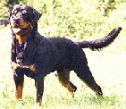

Meet the EROS Team
The EROS team is an eclectic bunch of folks who have worked on a wide variety of previous projects. Some of them are here at Penn, while others are out in the real world. The following descriptions don't really do these folks justice.
The stupid looking cupids are my way of convincing people that they really ought to get me their photographs in a hurry.
The Research Group |
|
|---|---|

|
Jonathan S. Shapiro
The principle architect and project leader for the EROS system, Jonathan is a successful entrepreneur currently disguised as a doctoral candidate, and is a Senior Consultant with Synergistic Computing Associates. He started the EROS project in late 1991 with Norm Hardy, and has been working at it off an on since then. Jonathan is the originator of the kernel threads design, and the 'SNOCRASH distributed snapshot algorithm which is the underpinning of distributed orthogonal persistence. Jonathan's prior work has been in the areas of computer architecture and CASE tools. His home page has more information.
|

|
Steve J. Muir
Currently working on the EROS networking code - packet filter and router already up and running, TCP/UDP/IP coming real soon now. Still primarily interested in rowing but too busy to get out on the river at the moment.
|

|
Jonathan Adams
A sophomore at the California Institute of Technology, Jonathan has spent the summer of 1997 working on EROS at the University of Pennsylvania, where he built the current version of the space bank and line discipline components. His interests include ditch day planning (A CALTECH tradition), physics, computing, electrical engineering, and the local wildlife. Jonathan claims not to have a home page, and was smart enough not to let shap make one up for him. When he joins the 20th century he will let us know.
|

|
Colin McLean
A sophomore in the School of Engineering and Applied Science, Colin joined the project in June of 1995. He has implemented many of the device drivers supported by the system, and will shortly be starting on work on Dionysix, the UNIX-compatible operating environment. Colin's home page is also worth a visit.
|

|
Mike Laskin
A junior in the School of Engineering and Applied Science Mike joined the project in September 1996. He will be working on porting XFree86 to the system. More information about Mike and his interests can be found on his home page.
|

|
Mike Berry
A senior in the School of Engineering and Applied Science Mike joined the project in January, 1996. He is currently working on Dionysix. View his homepage for more information.
|

|
Daniel Brushteyn
A senior in the School of Engineering and Applied Science Daniel joined the project in January, 1996. He is currently working on a native TCP/IP stack for EROS Check out his home page for more information.
|
Faculty |
|

|
Jonathan M. Smith, Associate Professor
A wizard of high speed networking, switching, and operating systems, Jonathan may eventually come up with his own descriptive paragraph. Until then, check out his home page.
|

|
David J. Farber, Professor, IEEE Fellow
One of the earliest practitioners in distributed systems and networking, David's accomplishments are awaiting his self-description. Until then, his home page is sometimes available here.
|
|
|
Sam Weber
Sam Weber joined the EROS effort a year ago, and has done a great deal to put some formal rigor into the work. Sam has since accepted a position with IBM.
|
Collaborators |
|

|
Norm Hardy
An early collaborator on the EROS project, Norm spent countless hours describing the workings of KeyKOS at a time when the documents were hard to come by, and talking through the early design of the EROS system (most of the KeyKOS documents are now available from the KeyKOS home page). Norm continues to contribute to the project through the designers discussion group. Norm's home page will soon be worth a visit.
|
Our Mascots |
|

|
Sheena (a.k.a. Pooh Bear, Greedy Guts)
An early member of the EROS team, Sheena is in charge of project security and physical conditioning. She plays a critical role in design reviews, invariably taking positions that maximize her role in the proceedings. Sheena is an expert at locating and shedding unnecessary fluff, which tends to make the fur really fly. Also, she has a knack for declaring lunch breaks at strategic moments. After much encouragement, Sheena eventually agreed to have her picture taken, so her stunt double was retired. Thor. fans can still find him at his web page.
|
|  |
Natasha (a.k.a. Goofy Bear, Tigger)
A more recent addition to the EROS team, 'Tasha is in charge of recreation and tongue lashings (sic (sick)). She tends to bounce back and forth from one part of the project to another, usually in search of a handout. Tasha is quick to react to surprises, and doesn't like them, so we put her in charge of scheduling. This photo is a standin, which will be replaced when shap gets his scanner reconnected.
|
Copyright 1998 by Jonathan Shapiro. All rights reserved. For terms of redistribution, see the GNU General Public License